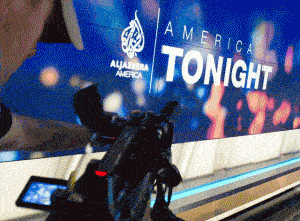
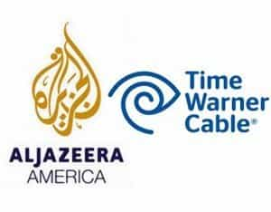

Quintus can be found at qcurtius.com. He is the author of the books On Duties, Thirty Seven, Sallust: The Conspiracy Of Catiline And The War Of Jugurtha, and other books. His work has been reviewed at Taki's Magazine. He can be followed on Twitter


The cable news channel Al Jazeera was born in 1996 in the small principality of Qatar. It was nothing less than revolutionary for the world of Arabic media. It dared to criticize nearly everyone and everything, it was not controlled by a stodgy bureaucracy, and it would not be dictated to by oppressive regimes in the region. It was a young channel, staffed by many idealistic types who had been educated in the West.
But the station came to be demonized in the West in general and in the United States in particular. It would not toe the neo-con party line in the early 2000s during the Iraq invasion, and threatened to report a side of the war that threatened Washington’s policies in the region. Some American leaders used it to deflect attention from their warmongering policies, and predictably, public opinion in the United States came to see it as some sort of radicalist mouthpiece. It was absurd, but such is the influence of ignorance and fear-mongering.

So everyone knew it would be a risk when the station announced in 2013 that it would launch a cable station in the United States called “Al Jazeera America” (or “AJAM”). Recently, the station announced it would close in the early weeks of January 2016. After spending a huge amount of money on the project, the bosses in Doha, Qatar decided it was time to call it quits.
What had happened? How had the global network failed to penetrate the American market? The reasons are varied, and offer many learning points to any organization aspiring to become a media brand.
Problems developed early on when major cable distributors like Comcast and DirecTV declined to carry the channel. Right before the channel launched in 2016, it was dropped by AT&T U-verse.

The reasons boiled down to two things: (1) lack of confidence that people wanted yet another cable channel; and (2) a vague feeling of unease in anything coming from the Middle East.
Branding and marketing are critical, as everyone who runs a business should know. Every product needs an identity, and that identity should be positive, not negative. A negative perception always hovered around Al Jazeera, albeit unjustifiably. But the channel should have done something to rebrand itself.
Al Jazeera English (AJE, the English-language version of the channel) had actually been (and continues to be) a success. Al Jazeera had also started successful media niches in the Balkans and in Turkey. It is basically a liberal-oriented network on the model of the BBC or CNN. But entering the American market itself was an entirely different matter.

The channel should have changed its name and logo. The perceived taint from the Iraq war days (even though unjustified) was just too strong. Perceptions, not reality, are what matter.
Another bad thing to happen was the channel’s purchase of Al Gore’s “Current TV” station. It paid about $500 million for Current TV, which was never popular to begin with. It had no audience and no real identity. The station itself was carried by less than half of all cable subscribers, so AJAM found itself saddled with expensive baggage that was not performing.
Gore made out like a bandit. He dumped his useless channel on the unsuspecting Qataris, then took the money and ran. This was without doubt a bad business decision by Doha. It failed to see that the future of news was on the internet, not on cable, as things had been in 1996. It was using logic that had been valid for 1996, but was not valid for 2016. AJAM had at least three expensive locations in New York City, one of which came with an outrageously high monthly rental cost.
The station was not able to deal with the US cable contracts that negated the main strengths of AJE. AJE’s streaming feed is very popular, but AJAM had to block access to the AJE feed on the station, a move that alienated many potential viewers. The reason was that AJAM could not afford to permit a free live stream on its cable station. It needed subscribers and revenue, and a free live feed gained it neither of these.
There was also personal drama. No less than five high-level female executives resigned amid rumors of “sexism” and a “culture of fear” at the station. For whatever reason, AJAM was unable to solve these problems in a way that remained discreet and behind closed doors. This may be ascribed to a failure to understand (to put it tactfully) American norms of political correctness.

And none of these expensive executives did anything tangible for the company, either. Despite the huge amounts of money being pumped into the station, AJAM failed to lead any significant news stories or carve out a niche market. Huge salaries were being paid to people who were occupying space and doing little.
In retrospect, AJAM should have stuck to its internet guns. The future lay in streaming news on the internet, not in 1990s cable news channels. Digital, not cable, was the wave of the future. In retrospect, rather than start a new cable channel, Doha should have either started a new internet site focusing on American content, or it should have paid existing cable companies to carry its already-proven AJE content and programs. That would have saved it huge amounts of money. As oil prices began to fall in 2015, Doha simply made the decision to pull the plug on the project, rather than try to reform it.
Hindsight is always perfect, but these do seem to be the most articulable lessons from the demise of AJAM. They are lessons that every media company, including Return of Kings, should keep in mind.
Read More: 11 Ways To Survive A Media Shitstorm